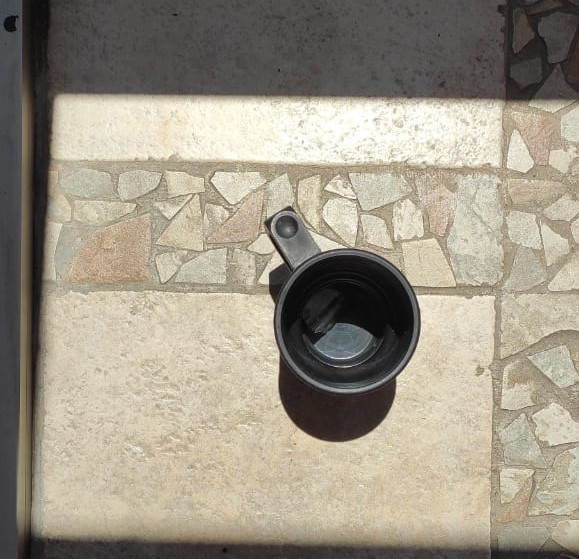
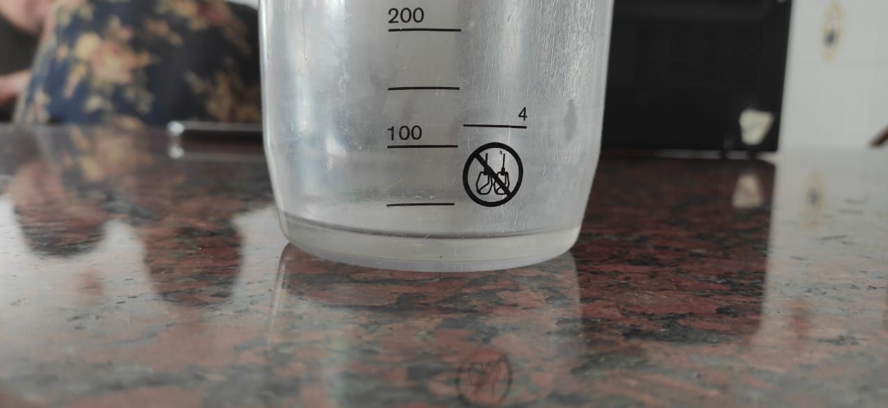

Para la medición, se utilizó un vaso térmico de calidad profesional como recipiente, dentro del cual se colocó un cubito de hielo. Se colocó un papel film recubriéndolo.
Se inició la medición con el cronómetro del celular a las 12:38, cerca de la culminación superior del Sol, y se finalizó a las 13:21, por lo que el intervalo de tiempo para la fusión del cubito de hielo fue de 42 minutos y 9 segundos. Durante ese tiempo, la altura media del Sol fue de 73°. El diámetro del recipiente es 7,7cm y el área por el cual ingresa la luz al recipiente es 46,57 cm^2.
Una vez que el hielo estuvo ya derretido, se midió su volumen en cm3 con un vaso medidor y se obtuvo un valor de 25 cm^3. Sabiendo que el peso específico del agua es de 1g/cm^3, obtenemos que la masa de H2O empleada es de 25g.
En síntesis, conseguimos los datos que buscábamos: la masa del hielo, el intervalo de tiempo que tarda en derretirse, el área por el cual ingresa la luz y la altura media del Sol durante la medición.
Luego de obtenidos los datos, procedimos a ingresarlos en la herramienta desarrollada por nosotros que se encuentra debajo de todo en este mismo apartado y que utliza las ecuaciones mencionadas en los apartados "Astrofísica" y "Calorimetría" y obtuvimos que la temperatura del Sol, de acuerdo con los datos recavados debería ser de 5745.12 K y que la luminosidad de este mismo astro, debería ser de 3.76 * 10^26 W.
Por último, cabe mencionar que, de acuerdo a los datos presentes en Wikipedia, el error de nuestros cálculos fue de un 0.57 % para la temperatura y de un 1.75 % para la luminosidad.
Para concluir este apartado, aquí debajo se encuentra la herramienta desarrollada por nosotros para realizar todos los cálculos necesarios. Por defecto vienen cargados en cada campo los valores que nosotros obtuvimos, pero si usted los modifica, verá instantáneamente cuál es el valor para la temperatura del Sol y para la luminosidad del Sol de acuerdo a los valores ingresados.
Si quiere volver a nuestros valores originales, no tiene más que recargar la página o presionar el botón que reza "Resetear los valores" al final de los campos de entrada.
Los valores de referencia a partir de los cuales se calcula el porcentaje de incerteza son de 5778 K para la temperatura y de 3.827 * 10^26 W para la luminosidad y fueron tomados de Wikipedia